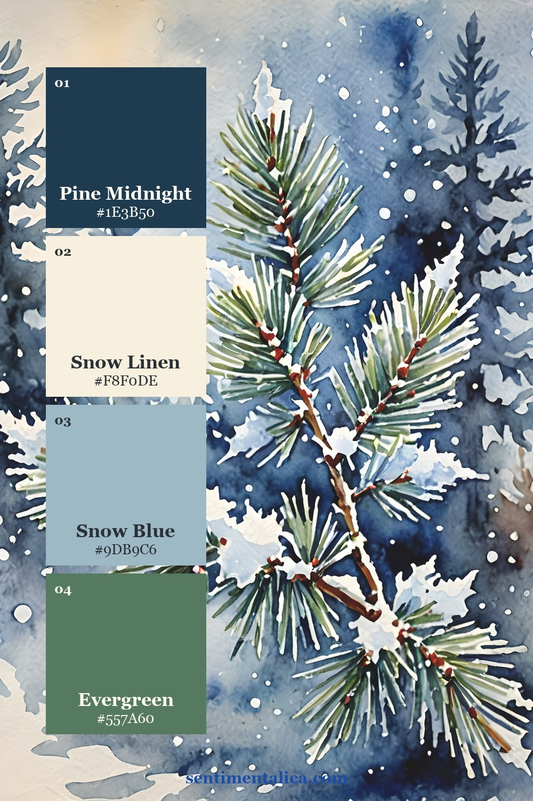
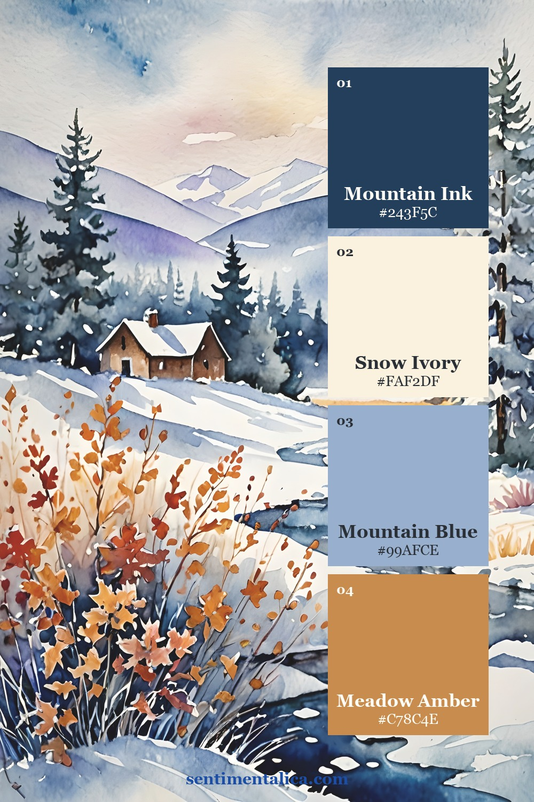
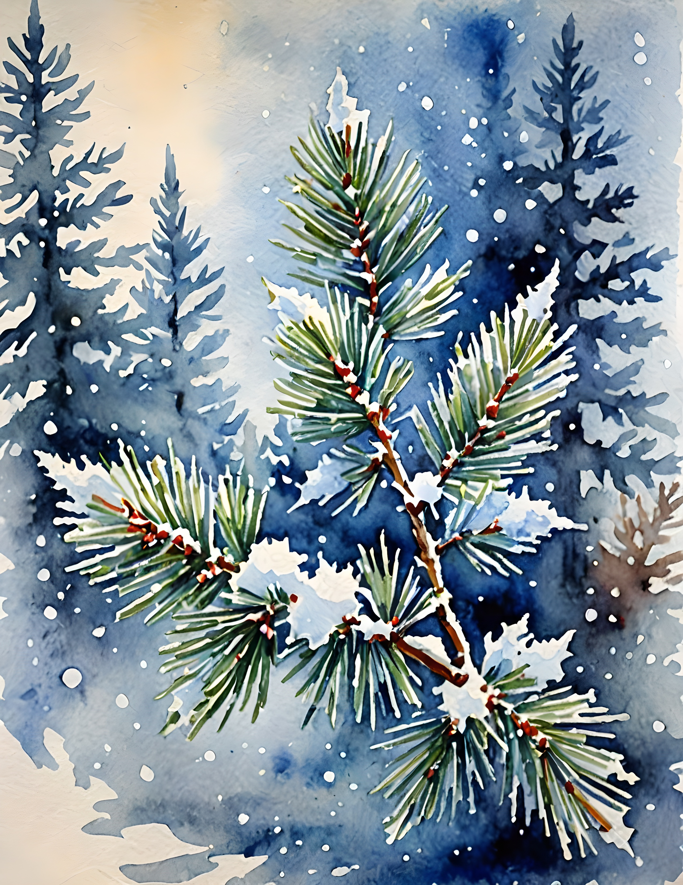
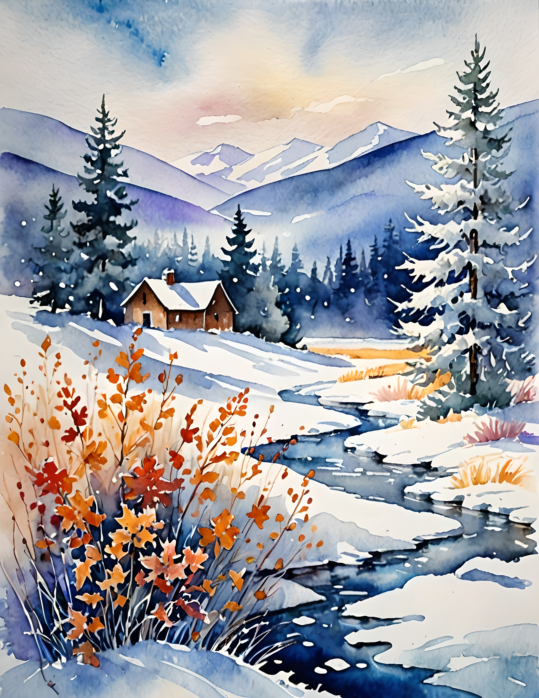
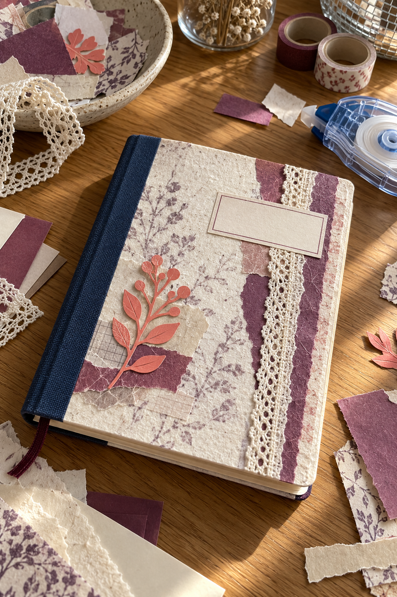
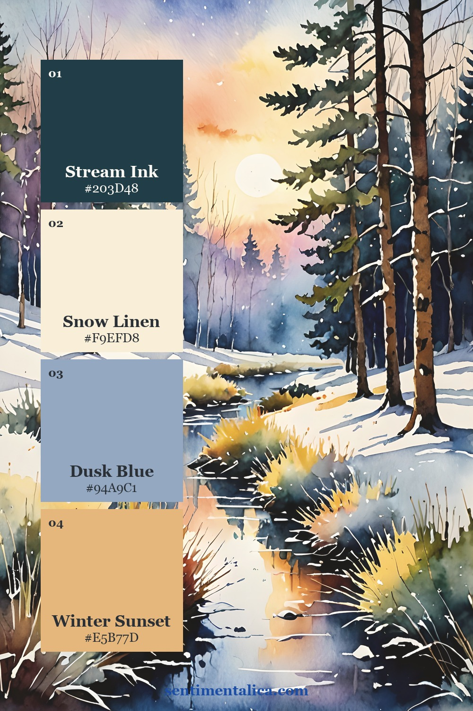

A winter reading journal cover should invite you to open the notebook. It also needs to tell you what is inside. When a beautiful winter image fills every inch, the title can become an afterthought, squeezed into whatever space remains.
Plan the title and the artwork together instead. This cover uses one printed panel on a plain notebook, with an uncluttered label and a visible margin. You choose and cut the pieces yourself from printable artwork and simple paper supplies.
Measure the cover and title
Begin with a notebook that already opens comfortably. Measure the flat front cover, staying clear of the spine hinge. Cut a scrap-paper rectangle smaller than the cover so you can see a plain margin all around it.
Write “Winter Reading” or your own title on another scrap. Place it where you can read it at a glance. If you also want a date range, add that in smaller writing; a reading journal can cross into the next year without needing a new cover.
A quiet margin is part of the design. You do not need to fill it with another layer.
Give navy a clear role
Navy provides a steady anchor for a winter cover. Let it appear in the artwork or a thin backing layer rather than darkening every surface. A clean cream label gives the title enough contrast to remain useful on a shelf or beside your reading chair.

Soft plum can bridge the darker imagery and the plain notebook. Repeat it in a small paper tab or the title lettering if the selected page contains it. Repeating a supporting color is often enough to make separate materials feel related.

Select an image for the panel
Winter Wonderland includes snowflakes, frosted florals, evergreen forests, candles, and snowy settings. A forest page can establish a quiet reading mood, while florals make the cover softer. Choose one direction and keep the rest of the notebook simple.
The real collection pages below are artwork you can use for the panel. Look for a crop that survives your notebook’s proportions. A beautiful wide scene may lose its main feature when trimmed into a tall, narrow shape.


Test the panel before mounting
Print an ordinary-paper draft and place your scrap title label over it. Try the label near the bottom and near the top. Keep it away from the part of the picture you most want to preserve, whether that is a cluster of flowers or a glow between trees.
If neither placement works, make the artwork panel shorter and put the label on the plain cover below it. This gives the image and the words their own space. You can also reduce the print slightly to reveal more of the scene inside your chosen rectangle.

Bring in a small warm accent
Coral peach or amber can keep a cool winter cover welcoming. Let the warm color come from the image first, then echo it once in a small detail. A single narrow strip beneath the title is enough; several warm layers may compete with the main panel.

Use a thin, even coat of paper adhesive to mount the artwork and smooth it flat. Leave the hinge untouched so the notebook opens freely. Keep decorations low and flat if you will stack other books on top of the journal.
Once the cover is dry, open the notebook and write one useful first-page prompt: “What kind of reading do I want this winter?” Add a place for a book title, the date, and one remembered sentence. The cover has done its job when it leads naturally into a page you want to use.